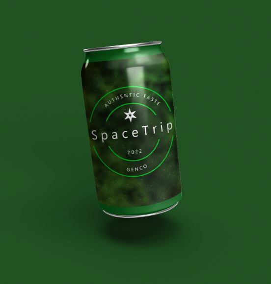
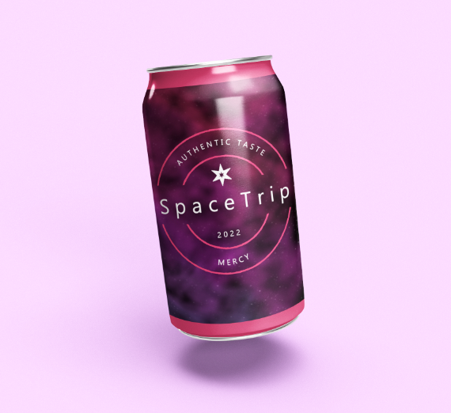
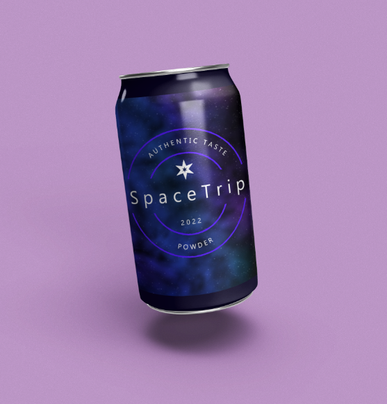

Design
Projets numériques

Dans le cadre de mon DUT MMI, j'ai réalisé de nombreux projets. Cette pochette d'album s'inscrit dans l'un d'eux. Chasue étudiant devait sélectionner un artiste de son choix et réaliser une nouvelle pochette d'album.
Plusieurs projets avaient pour but la conception de design pour des objets 3D. On retrouve ici un projet autour d'une marque de canette que nous devions créer.
Ce projet c'est découpé en plusieurs modèles dans le but de créer une collection complète.
Chaque motif a été réalisé séparement puis appliqué à la canette avec un logo commun.